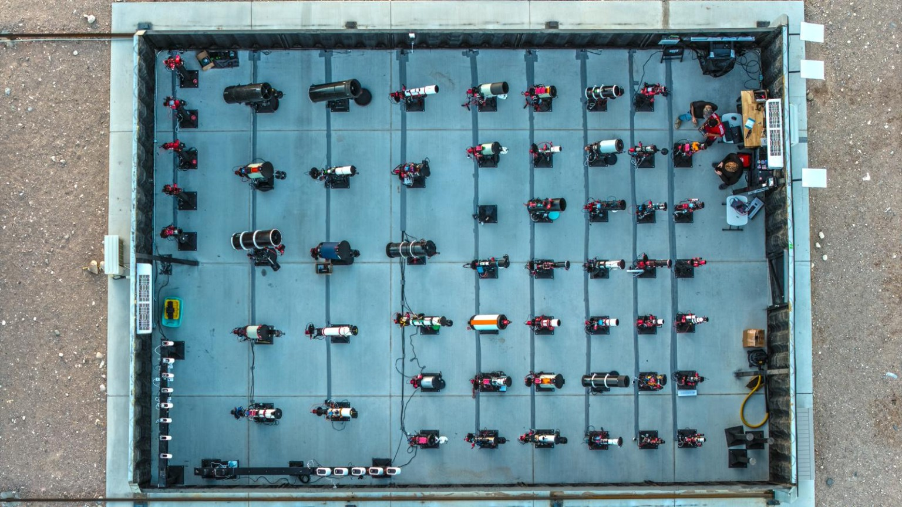
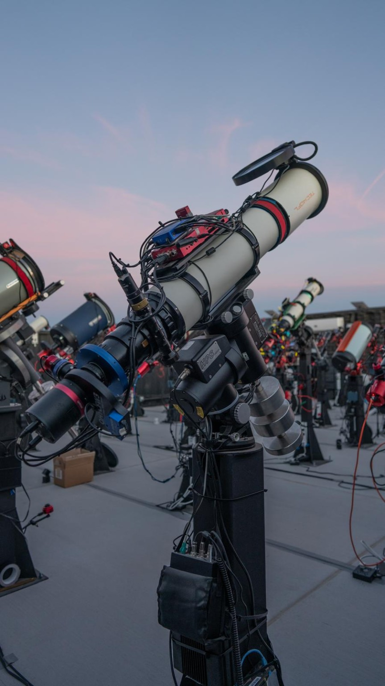
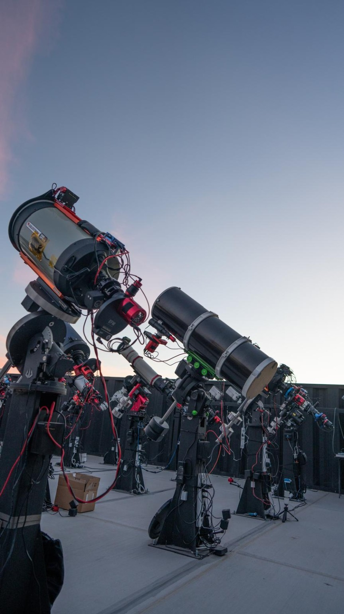
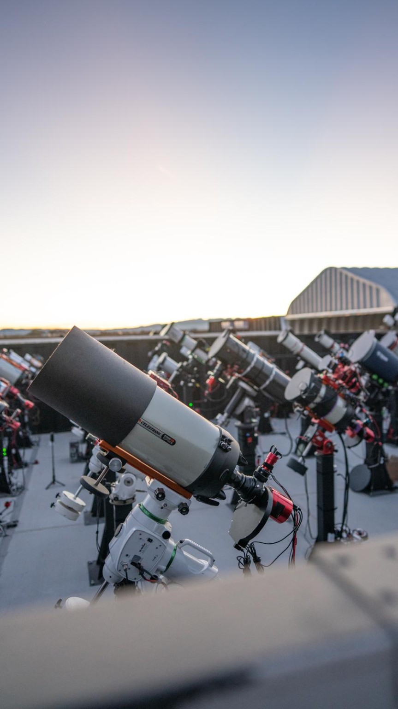

What does it take to build an observatory in one of America's remote desert regions? We spoke to the team behind Death Valley Observatories (DVO) about their search for dark skies, hosting other people's telescopes, the rise of remote rentals and the possibility of amateur astronomy contributing to real science.

From a passion to an observatory
DVO began with a question: could three astronomy enthusiasts make a living from their passion? Juan, Nico and Marcelo spent their first year testing the business case, then more than a year travelling across the United States to find the right skies. Rather than build near home, they carried a 12-inch telescope, a CEM120 mount and a sky quality meter, around 80 kg of equipment, to prospective locations. They compared their measurements with historical cloud, wind and humidity data. The search led to western Nevada, near the mountains separating Amargosa Valley and Death Valley. The observatory takes its name from that proximity.
“Purchasing that land was the turning point. There was no going back, and we began construction of our first observatory.”
Building at a remote site brought practical difficulties: contractors, electricity, water, automation, customer systems and even choosing a name and logo. Juan describes the isolation as both the biggest complication and DVO's greatest asset.

What is actually there?
At the time of the interview, DVO reported around 90 installed telescopes and another 25 awaiting installation in its second observatory. A waiting list was already open for the third. Equipment ranges from Seestar smart telescopes and 135 mm camera lenses to 60–150 mm refractors, Newtonians up to 12 inches, 10- and 14.5-inch iDKs and a 24-inch PlaneWave L600.
“We don't want to become too large and compromise the quality of our service.”
Three owners and two employees run the site. Juan says staff are present day and night, handling preventative maintenance, support requests and improvements. The roof stays closed when weather presents a risk; he says the buildings are designed for winds of 250 km/h. Customers arrange their own equipment insurance because DVO does not provide it.

How remote hosting works
Owners discuss their equipment and pier requirements with DVO, then ship their rig or install it in person. The team assembles, calibrates and polar-aligns the system and sets up the customer's chosen remote-desktop solution, such as Chrome Remote Desktop, Microsoft Remote Desktop or RustDesk. Image files can be transferred using Google Drive. Staff can intervene for a failed cable, a camera restart or a computer configuration issue. Customers already come from Argentina, Mexico, Canada, Australia, Italy, Spain, Belgium, Russia and South Korea.
“It's just like operating a telescope in your backyard from inside your house.”
For owners, the practical difference is distance, not necessarily the workflow. DVO's team handles the physical access that a remote user cannot.


Renting a telescope without owning one
Equipment rental was always part of the plan, but demand for hosted piers initially took priority. Now DVO is expanding rentals. For Seestar and ASIAIR systems, the observatory configures the booked setup for the customer's account and they operate it through the familiar app. Customers can also use a Discord community to check weather and roof status. More advanced systems provide remote access to a mini PC running NINA, which requires considerably more experience.
“You can learn how to use a Seestar in 15 minutes, whereas operating a 12-inch Newtonian on an EQ8 Pro mount with NINA requires advanced knowledge.”
Juan sees ASIAIR-equipped refractors as an intermediate step. Some customers rent a Seestar for a week to test DVO's skies and service before deciding whether to send their own equipment. Although interest in smart telescopes has risen sharply, DVO wants its future rentals to stand out through larger, more capable imaging systems.


The skies make the difference
Juan says sky darkness and transparency can reveal integrated flux nebula (IFN), faint dust illuminated by the combined light of the Milky Way, even around galaxies where it might be missed from a brighter site. He also describes a local microclimate: on some nights when much of the United States was cloudy, the observatory remained clear. Rain is rare, he says, and the roofs may remain closed for rain risk only a few times each year.
“Sky darkness and transparency are everything in this hobby.”
DVO highlighted images of NGC 1333, NGC 772 and LDN 1251 as particularly memorable. The team singled out Abell 2218, a distant gravitational-lensing galaxy cluster, as one of its hardest targets. Juan reports more than 50 hours captured, with the best 23 hours selected, at 0.65 arcseconds per pixel. Another example, NGC 90, illustrates faint surrounding IFN. Image placement is reserved pending receipt and permission to use DVO's originals.

A meteor, a camera and NASA
One customer noticed a fireball and smoke trail on a pier camera. Other users checked their observations, and a telescope happened to be pointed towards the same region of sky. The resulting image was later selected as NASA's Astronomy Picture of the Day on 3 August 2026. The APOD page describes a meteor crossing the Lacerta Nebula and credits Tom Burnett.
“A few weeks later, that image was selected as NASA's Astronomy Picture of the Day.”
Read the NASA APOD feature. The APOD photograph is linked rather than reproduced here until the photographer's permission is confirmed.

Beyond beautiful pictures: astronomy as science
Some hosted telescope owners use their rigs for scientific projects, including supernova searches, asteroid astrometry and variable-star observations. Juan believes large instruments and many clear nights make the observatory well suited to more research. He can even imagine a dedicated scientific facility built to the engineering tolerances required for that work.
“We can even envision building an observatory specifically dedicated to scientific research.”
In a follow-up, Juan clarified that DVO has not been made aware of specific discoveries made at the observatory so far, and that this kind of research is generally collaborative. Hosting research activity is not the same as claiming a discovery, an important distinction for this feature.
What comes next for DVO?
DVO is beginning construction of its third observatory, with demand for telescope hosting continuing to grow. Yet Juan, Nico and Marcelo are not aiming for expansion at any cost. Their priority is to maintain the level of personal support that brought customers to the site in the first place. For a facility where people entrust expensive equipment to a team thousands of kilometres away, that relationship matters just as much as the darkness of the sky.
“We don't want to become too large and compromise the quality of our service.”
When asked what has made them proudest, the team did not point to a particular telescope or building. Instead, Juan spoke about seeing customers share their experiences and results in the observatory's Discord community and on social media. That feedback, he says, reassures them that the effort of building DVO in such a remote location was worthwhile.
The team can also imagine a future observatory dedicated specifically to scientific research, although Juan described this as a possibility rather than an announced project. For now, the focus remains on growing carefully and making each new facility work as well as the last.
The future of remote astrophotography
Beyond DVO's own expansion, Juan sees technology changing what astronomers can achieve. He expects more capable smart telescopes, potentially incorporating cooled monochrome cameras, LRGB and SHO filters and autoguiding. For larger and professional instruments, he believes adaptive optics could play an increasingly important role in countering the effects of atmospheric seeing.
Remote access is becoming more attainable too. As equipment prices have fallen, more astrophotographers have been able to collect longer datasets and spend more time on difficult targets. But the team recognises that there is something special about being physically beside a telescope and listening to it work.
“You develop a different kind of connection with your equipment, and the improvement in productivity and the number of imaging hours you can acquire is so significant that it's absolutely worth it.”
For someone considering a remote observatory for the first time, Juan's advice is straightforward: take the leap. The experience may be different from observing in your own garden, but the opportunity to work under consistently dark skies can open up an entirely new chapter of astrophotography.